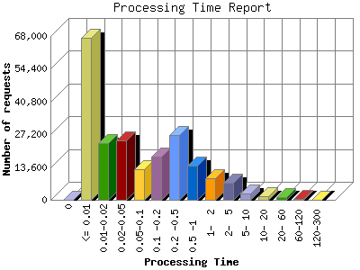

The Processing Time report shows the time it took for your server (or your host's server) to process each request. The processing time is listed in seconds with a theoretical accuracy of milliseconds. Note if your processing time appears to be about 100-times too long, then you are probably hosted on an IIS system that reports in 100th second intervals rather than second intervals.

| Processing Time | Number of requests | |
|---|---|---|
| 1. | 0 | 0 |
| 2. | <= 0.01 | 67,411 |
| 3. | 0.01-0.02 | 23,626 |
| 4. | 0.02-0.05 | 24,619 |
| 5. | 0.05-0.1 | 12,840 |
| 6. | 0.1 -0.2 | 18,034 |
| 7. | 0.2 -0.5 | 26,830 |
| 8. | 0.5 -1 | 14,300 |
| 9. | 1- 2 | 9,009 |
| 10. | 2- 5 | 6,923 |
| 11. | 5- 10 | 2,430 |
| 12. | 10- 20 | 1,637 |
| 13. | 20- 60 | 1,216 |
| 14. | 60-120 | 221 |
| 15. | 120-300 | 16 |
This report was generated on November 24, 2013 22:05.
Report time frame August 3, 2013 00:15 to November 18, 2013 23:25.
| Web statistics report produced by: analog 6.0 / Report Magic 2.21 |